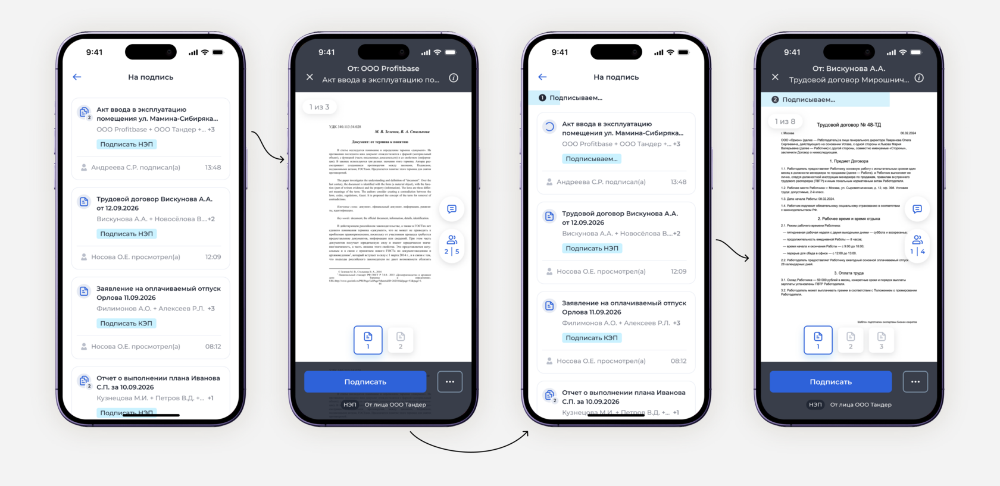
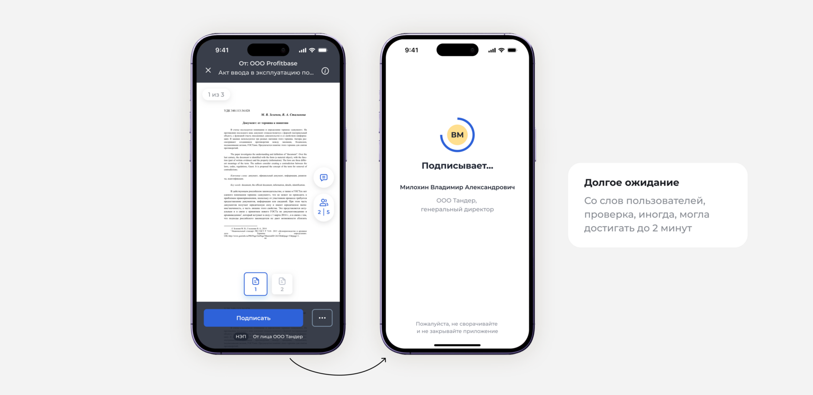
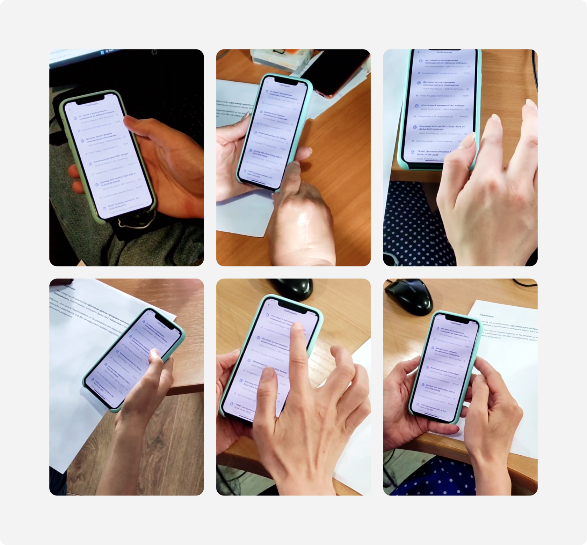
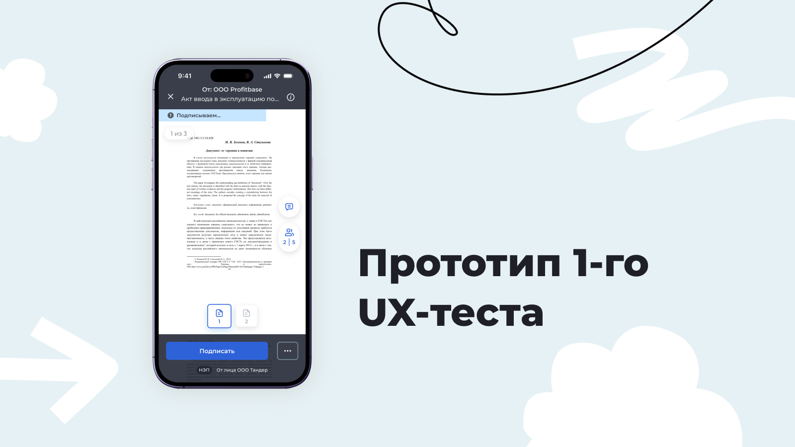
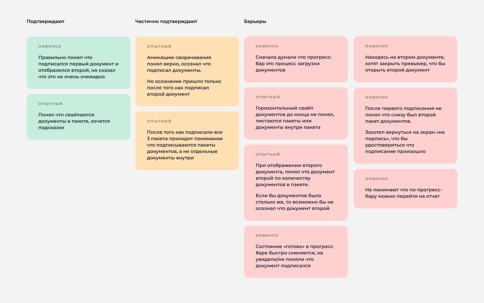
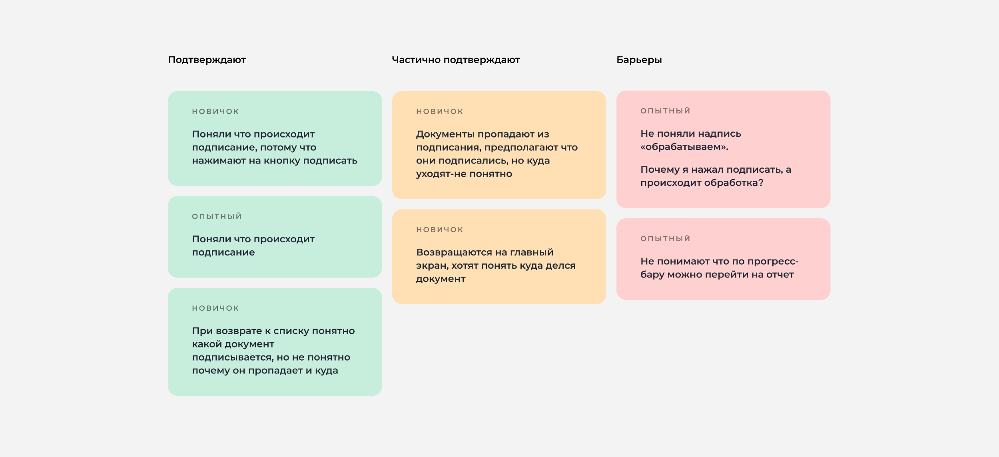
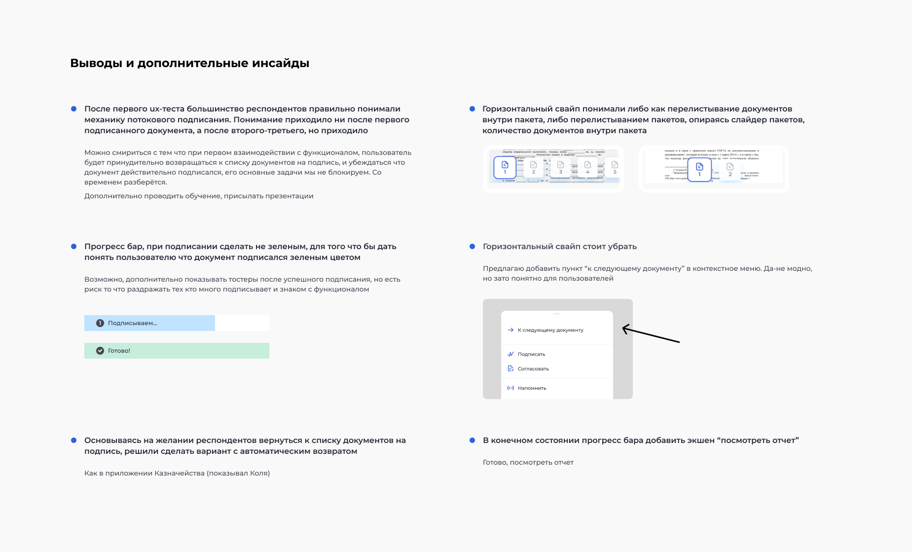
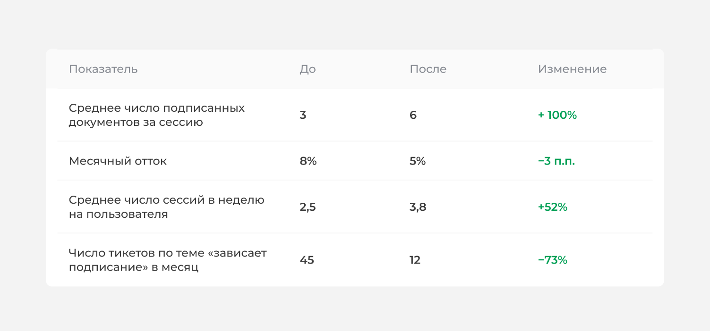

Потоковое подписание документов
Сделала подписание НЭП в Nopaper прозрачным и контролируемым: убрала блокирующий loader, добавила фоновый прогресс-бар и навигацию через список. Повторное UX-тестирование подтвердило — 100% пользователей правильно понимают новый интерфейс.
-
100%
пользователей правильно понимают новый интерфейс
-
3 → 6
подписанных документов за сессию (прогноз)
-
45 → 12
тикетов «зависает подписание» в месяц (прогноз)
100% — результат повторного UX-теста. Продуктовые метрики не замерялись (исследовательский прототип), остальное — прогноз.

Контекст и роль продукта
В Nopaper доступны разные типы подписей (КЭП, УКЭП, СМС-подпись), но самый популярный и базовый — НЭП (неквалифицированная электронная подпись). Парадоксально, но именно он работал медленнее всего, поскольку вся логика проверки происходила в момент подписания.
Если базовый сценарий тормозит, пользователь теряет доверие ко всему сервису, даже если альтернативы работают быстрее.
Проблема

Экран подписания (лоадер) часто зависал на длительное время. Особенно это критично для руководителей с большим количеством документов на подпись, которые уже предварительно согласованы юристом или бухгалтером, — им нужно просто и быстро подписать документ.
Также это влияло на бизнес-показатели: удлинение жизненного цикла документа, снижение активности пользователей из-за дискомфорта, рост оттока, снижение LTV (пожизненной ценности клиента) и ухудшение отзывов.
Цель
- Не блокировать пользователя во время подписания. Для этого нужно обеспечить непрерывный поток документов, реализовав возможность перехода к следующему документу без задержек.
- Добавить свайп-навигацию между документами. Это даст возможность выбирать очередность подписания без необходимости возвращаться к общему списку документов
Дизайн-исследование
Я собрала кликабельный прототип, распечатала задания на листочке, и мы вместе с аналитиком отправились на коридорный UX-тест

Гипотеза первого ux-теста
Пользователь, нажав на «Подписать» и увидев прогресс-бар, поймёт, что первый документ подписывается, и сможет перейти к работе со следующим (с помощью свайпа) и так же его подписать
Прототип 1

В тестировании приняли участие 8 респондентов:
- Опытные (коллеги на работе) — 4 чел.
- Новички — 4 чел.
Задание респондентов
«Представьте что вы директор IT компании, которому нужно подписать 3 документа. Его уже согласовал юрист, звонит и торопит что нужно поторопиться. Подпишите документы»
Нужно было выполнять задание и комментировать то что происходит на экране
Ответы респондентов подтверждающие и опровергающие гипотезу

Наблюдение за поведением
- Результаты тестирования показали, что функционал свайпа вызвал у пользователей когнитивный диссонанс: большинство респондентов не поняли, что именно перелистывают — отдельные страницы документа или целые пакеты документов
- Пользователи постоянно пытались вернуться к общему списку документов, чтобы сохранить контекст и чувство контроля
- У опытной группы респондентов этот эффект проявлялся ещё сильнее — отсутствие навигации к списку вызывало дискомфорт
Вывод
Добавить автоматический возврат к списку документов после подписания, сохранив при этом прогресс-бар. Это позволит:
- Дать пользователям ощущение контроля
- Упростить навигацию
- Сохранить визуальную информацию о прогрессе подписания
Гипотеза второго ux-теста
Если после подписания документа автоматически возвращать пользователя к общему списку документов, сохраняя при этом прогресс-бар подписания, то пользователи будут реже пытаться вернуться в список вручную (через кнопку «назад») и сообщать о чувстве контроля над процессом, потому что им не нужно совершать лишних действий для сохранения контекста, а прогресс-бар даёт визуальную обратную связь о статусе
Прототип 2
В тестировании приняли участие 6 респондентов
- Новички — 3 чел.
- Опытные (коллеги на работе) — 3 чел.
Задание респондентов звучало точно так же как и в первом тестировании.
Ответы респондентов подтверждающие и опровергающие гипотезу

Наблюдение за поведением
- Теперь респондентам не приходилось нажимать кнопку возврата к списку, это происходило автоматически. Они корректно воспринимали процесс, правильно понимали нахождение лоадера на документе и прогресс-бар вверху экрана
- Подтвердили проблему о которой давно знали. Звучит она так: «Пользователи не понимают почему из раздела «На подпись» исчезают документы, и, главное, где их потом искать»
- Не все респонденты понимали что на прогресс-бар можно нажать и перейти к отчёту. В дальнейшем проработали этот момент, для кейса когда документы упали в ошибку
Выводы после тестирования и дополнительные инсайды, которые пойдут в будущие итерации доработок

- Теперь респондентам не приходилось нажимать кнопку возврата к списку, это происходило автоматически. Они корректно воспринимали процесс, правильно понимали нахождение лоадера на документе и прогресс-бар вверху экрана
- Подтвердили проблему о которой давно знали. Звучит она так: «Пользователи не понимают почему из раздела «На подпись» исчезают документы, и, главное, где их потом искать»
- Не все респонденты понимали что на прогресс-бар можно нажать и перейти к отчёту. В дальнейшем проработали этот момент, для кейса когда документы упали в ошибку
Метрики
Поскольку проект находился на стадии исследовательского прототипа, точные продуктовые метрики не замерялись. Однако на основе поведенческих данных и логики влияния решения, можно прогнозировать снижение времени подписания на 40–50%.
Это гипотетические, но реалистичные цифры, основанные на логике — ниже показываю, как она раскладывается по цепочке «UX → бизнес».
Прогнозные метрики (иллюстрация логики влияния, не измеренный результат)

Как изменения в интерфейсе повлияли на бизнес
UX → Поведение
По прогнозу, среднее число подписанных документов за сессию может вырасти в 2 раза (с 3 до 6)
Автоматический возврат к списку позволяет пользователям не ждать завершения одного документа, а сразу переходить к следующему. Мы убрали блокировку и дали возможность работать в непрерывном потоке.
Поведение → Вовлеченность
По прогнозу, среднее число сессий в неделю может вырасти на 52% (с 2,5 до 3,8)
Когда пользователь видит, что процесс пошёл быстрее, он охотнее возвращается в продукт. Рост удовлетворённости напрямую конвертируется в рост активности.
Вовлеченность → Удержание
По прогнозу, количество тикетов по теме «зависает подписание» может сократиться на 73% (с 45 до 12 в месяц)
Проблема, которая раньше создавала боль и заставляла обращаться в саппорт, может перестать быть системной. Это снизит операционные расходы и повысит удовлетворённость пользователей сервисом в целом.
Рефлексия
Этот проект научил меня одному из самых важных уроков в дизайне: ты — не пользователь.
Я была уверена, что свайпы между документами — удобное решение, и думала, что пользователи оценят возможность самим выбирать очерёдность подписания. Однако тестирование показало обратное: люди хотели видеть список документов и понимать, что происходит с каждым из них.
Рабочим решением стала не новая функция, а простой сценарий: после подписания пользователь автоматически возвращается к списку и видит прогресс-бар. Меньше интерфейса — больше прозрачности и контроля.
Теперь я исхожу из того, что любое дизайн-решение — это гипотеза, которую необходимо проверять на реальных пользователях. Даже если это означает отказ от собственных предположений и пересмотр первоначальной идеи.